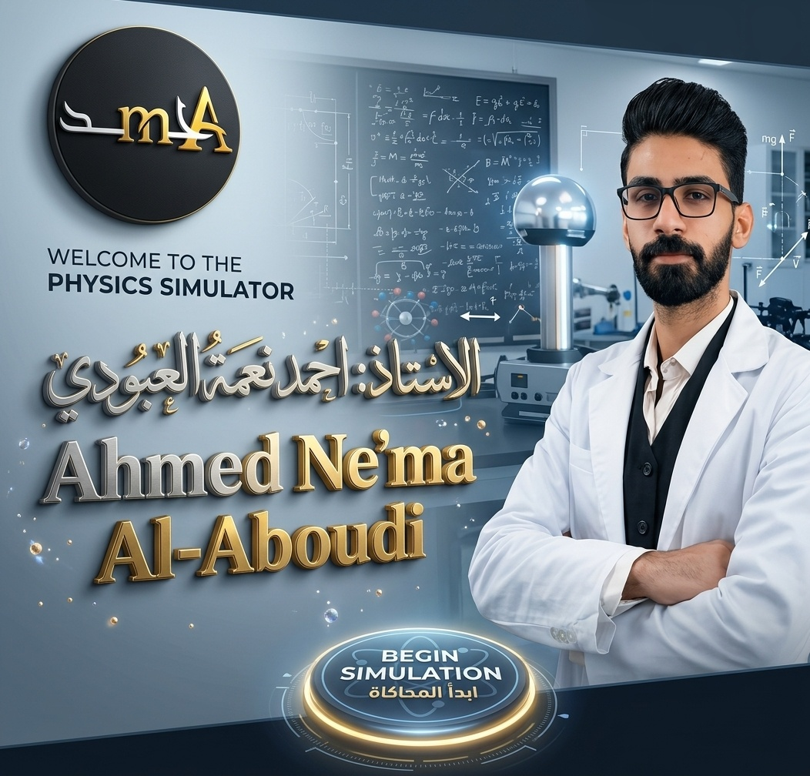

ابدأ المحاكاة — عرض الفصول
اضغط «ابدأ المحاكاة» لعرض الفصول
مختبر الفيزياء الافتراضي · Phy Sixth 1-2
اختر الفصل
الفيزياء — الصف السادس الإعدادي (الثاني عشر) — الفصلان الأول والثاني
١
الفصل
المتسعات
السعة الكهربائية والعوازل
العوامل المؤثرة على السعة
العوازل
الشحن والتفريغ
التوالي والتوازي
٦ تجارب تفاعلية
ادخل التجارب
٢
الفصل
الحث الكهرومغناطيسي
الفيض وقانونا فارادي ولنز
توليد التيار المحتث
قانون لنز
الحث المتبادل
المحوّلات
١٠ تجارب تفاعلية
ادخل التجارب
إعداد:
الأستاذ أحمد نعمة العبودي
⌂ الواجهة الرئيسية
الفصول
الفصل الأول — المتسعات
الفيزياء — الصف السادس الإعدادي (الثاني عشر)
جارٍ تحميل تجارب الفصل الأول…
جارٍ تحميل تجارب الفصل الثاني…